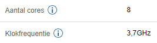
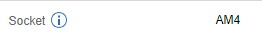
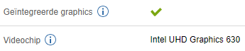

CPU kiezen
Basis
De CPU, of zoals het ook wel bekend staat, de processor, is een van de belangrijkste componenten in een computer, aangezien de processor het grootste deel van de berekening doet, en daarom is het ook belangrijk dat je de juiste kiest.
Dus eerst moet je kijken naar wat je wilt uitgeven aan je computer, als je een computer wilt hebben die de technologie van tegenwoordig kan bijhouden moet je eigenlijk wel minimaal €400 euro in totaal uitgeven. Het is aan te raden dat ongeveer 20% - 25% van prijs van je computer de CPU is.
Kenmerken
De CPU heeft 3 kenmerken waar je op moet letten: Cores, Kloksnelheid en Threads. Cores worden gebruikt om meerdere taken tegelijkertijd te kunnen uitvoeren, dit is voor bijna alles nodig. Dan heb je Kloksnelheid, dit bepaalt hoe snel de processor deze taken kan uitvoeren, dit is belangrijk voor Gaming, hoe meer hoe beter, maar ook hoe heter de processor dan wordt. En als laatste heb je nog Threads, deze zijn belangrijk voor Workstation, het aantal Threads is hetzelfde als het aantal Cores, tenzij je processor Hyperthreading heeft, dan zijn er twee keer zoveel Threads als Cores. Een processor met 4 Cores en 8 Threads (dus met Hyperthreading) is vaak goedkoper dan een processor met 8 Cores en 8 Threads (dus niet met Hyperthreading).
Merken
Bij een CPU zijn er 2 grote merken waar je eigenlijk uit kan kiezen: Intel en AMD. Wat je Intel fans zal horen zeggen is dat AMD super veel stroom gebruikt en heel langzaam is, maar wat je AMD fans zal horen zeggen is dat Intel veel te duur is en je niet extra er voor krijgt, maar de waarheid is: AMD is goedkoper en iets langzamer (en sommige oudere processors verbruiken ook veel stroom) en Intel is duurder en iets sneller. Maar als je Intel wilt kiezen is er nog een extra voordeel, je hoeft niet op de kloksnelheid van je ram te letten, want dat heeft dan veel minder effect. Als je voor AMD gaat is het het beste als je voor Ryzen gaat, aangezien deze processors de beste prijs/performance ratio hebben.
Socket
Een belangrijk ding om op te letten bij het kiezen van een processor is de Socket, de socket is de maat van processors, dit moet je weten want dan kun je de Socket van je processor kiezen als filter bij het kiezen van een moederbord, anders zal de processor niet in het moederbord passen. Wat je Socket is kun je vinden bij de specificaties van je processor.
Integrated Graphics
Dan als laatste moet je nog weten of je processor iets heeft dat Integrated Graphics heet, dit is de grafische chip, en zorgt dus voor het beeld, als je processor deze heeft kan je de poorten bij het moederbord gebruiken, zo niet, moet je een videokaart kopen, en dan moet je de outputs van de videokaart gebruiken om een beeldscherm aan te sluiten.
Dit was Stap 2 van Deel 1, je kunt nu verder gaan naar de volgende stap